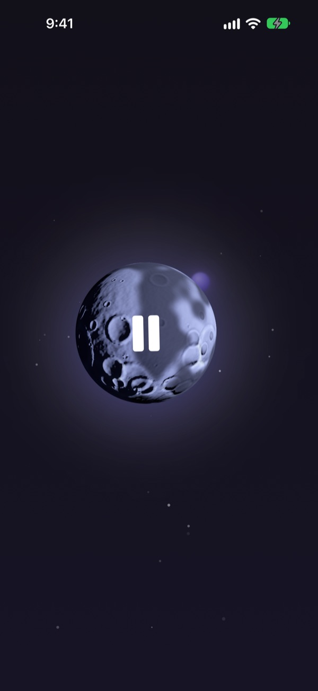
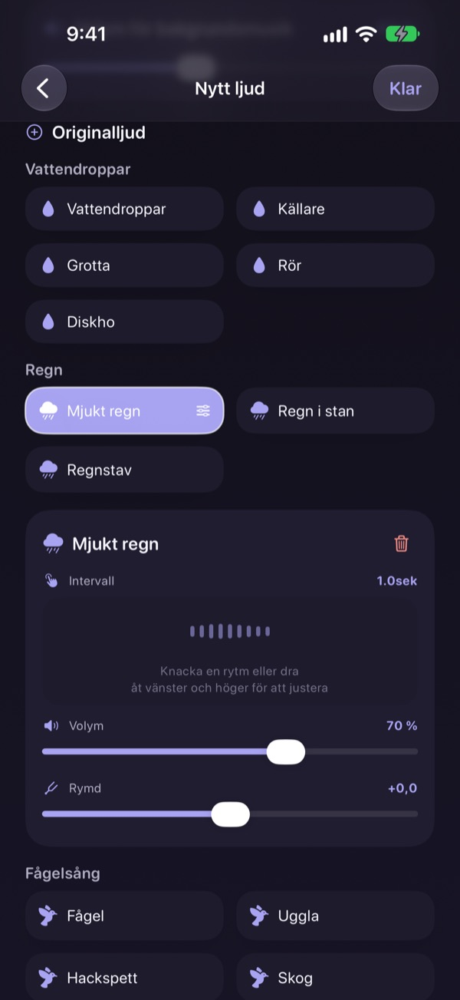
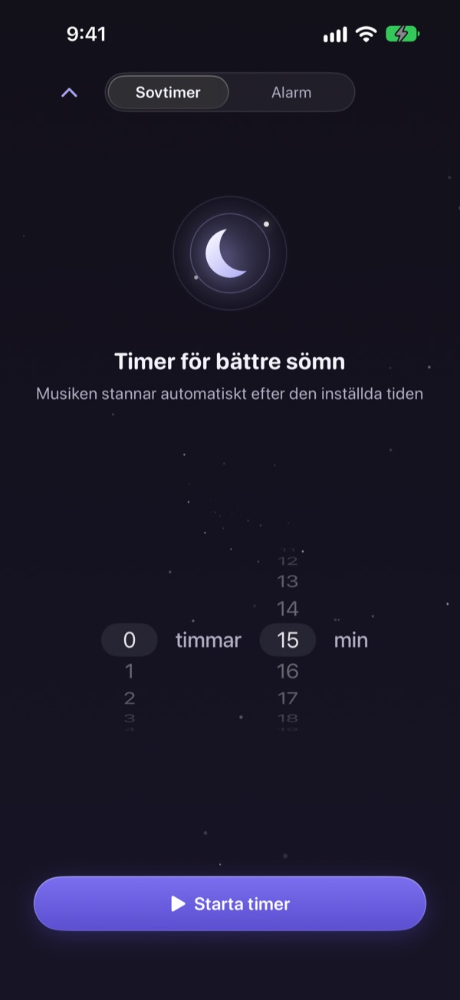
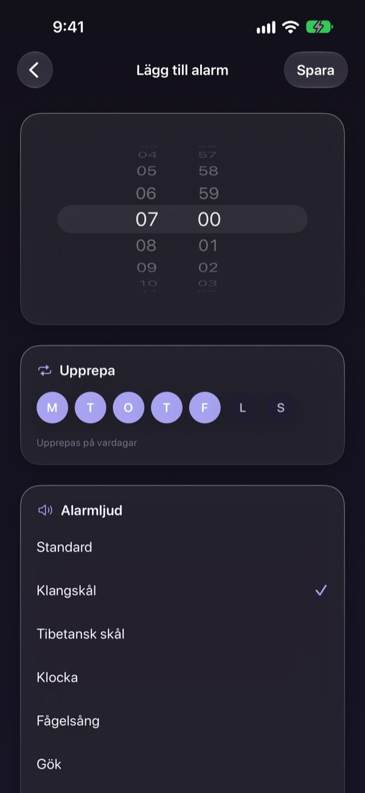
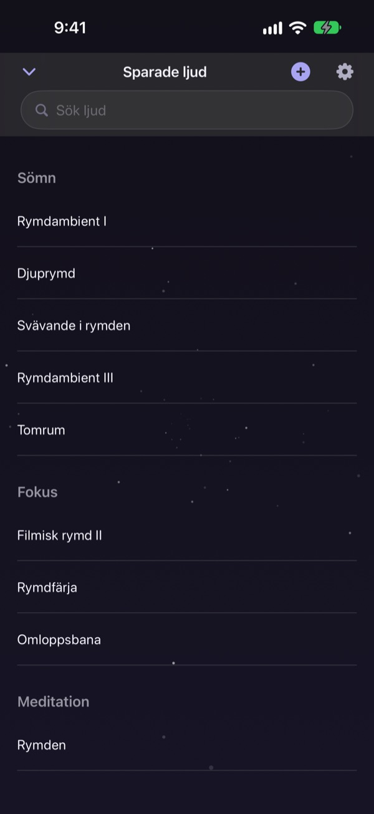

Lägg inte natten på
att leta efter rätt ljud
Lägg regn, vattendroppar och en klangskål i lager till ditt eget ljud en gång. Från nästa natt räcker ett tryck på månen.
Alla ljud är gratis att lyssna på. För iPhone och iPad.

Har du någon gång lagt en timme på att hitta något att somna till?
Regnet är för enformigt, vågorna för höga och videon du sätter på avbryts av reklam mitt i natten. Med Dalbit lägger du själv dina favoritljud i lager tills det passar just dig, och sparar det bakom en enda måne.
Bygg ditt ljud i lager
Stapla regn, vattendroppar, fågelsång och klangskålar. Ställ in volym, hur ofta lagret hörs och varifrån det kommer, och lägg vågor eller piano under som bakgrundsmusik.
Ge mixen ett namn, spara den och gå tillbaka till den vilken natt som helst.

Tonar ut utan att väcka dig
Sömntimern klipper aldrig ljudet tvärt. Den sänker långsamt, så att slutet inte väcker dig igen.
Ljudet fortsätter med skärmen släckt eller i en annan app, och låter du den vara dämpas skärmen av sig själv.

Väck dig mjukt på morgonen
Ställ larm med klangskål, tibetansk skål, fågelsång eller gök och upprepa dem de veckodagar du väljer.

En måne för allt
Tryck på månen för att spela och igen för att pausa. Svep åt sidan för ett annat ljud, uppåt för sömntimern och nedåt för dina sparade ljud.
När ett ljud känns rätt håller du fingret på månen för att lägga till det bland favoriterna.

Kom igång i tre steg
- 1
Tryck på månen
Öppna appen, tryck på månen och ljudet börjar direkt.
- 2
Svep åt sidan
Fortsätt tills du hittar ett ljud du gillar.
- 3
Ställ timern och lägg dig
Svep uppåt, välj en tid och sedan tonar ljudet långsamt ut.
Det här gör månen
- Tryck
- spela, pausa
- Svep åt sidan
- nästa ljud
- Svep uppåt
- sömntimer och larm
- Svep nedåt
- sparade ljud
- Håll intryckt
- lägg till i favoriter
Du kan också pausa och fortsätta från uppspelningsreglagen på låsskärmen.
Att lyssna är gratis. Premium är till för att skapa fler.
Gratis
- Alla ljud
- Lägg ljud i lager till din egen mix
- Spara upp till tre mixar
- Sömntimer som tonar ut
- Larm med mjuka ljud
- Favoriter
Dalbit Premium
- Skapa och spara så många mixar du vill
Månadsprenumeration som förnyas automatiskt, med gratis provperiod
Prenumerationen förnyas automatiskt om du inte säger upp den minst 24 timmar innan den aktuella perioden tar slut, och du debiteras när provperioden är slut. Apples standardvillkor för användning (EULA) gäller.
Vanliga frågor
Hur spelar jag upp och byter ljud?
Tryck på månen på hemskärmen för att spela och igen för att stoppa. Svep åt sidan för ett annat ljud, uppåt för sömntimern och nedåt för ditt bibliotek.
Slutar ljudet när skärmen släcks?
Nej. Det fortsätter med skärmen släckt eller i en annan app. Tryck på månen igen eller använd reglagen på låsskärmen för att stoppa det.
Vad händer när sömntimern går ut?
Ljudet tar inte tvärt slut. Det blir gradvis tystare och stannar sedan, så att du inte vaknar.
Mitt larm ringer inte.
Appen ber om tillåtelse för larm när du skapar det första. Kontrollera att det är påslaget under Inställningar > Dalbit.
Var sparas mina mixar?
Dina mixar, larm och inställningar finns bara på den här enheten. Raderar du appen försvinner de också.
Vad kan jag använda gratis?
Alla ljud, lager på lager och upp till tre egna mixar. Sömntimern och larmen är också gratis. Premium tar bort gränsen för antal mixar.
Hur säger jag upp prenumerationen?
Gå till Inställningar > Apple-konto > Prenumerationer, välj Dalbit och säg upp. Säger du inte upp minst 24 timmar innan perioden tar slut förnyas den automatiskt.
Jag bytte telefon och prenumerationen försvann.
Logga in med samma Apple-konto, öppna prenumerationsskärmen i Dalbit och tryck på Återställ köp.
Hur rapporterar jag en bugg eller föreslår en funktion?
Skicka feedback från appens inställningar eller mejla adressen nedan. Vi svarar oftast inom några dagar.
Frågor eller idéer? Mejla mizzking75@gmail.com.